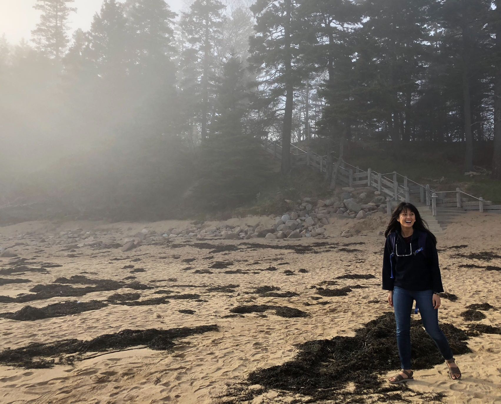

About Me

Gabriel Tunggala is a student in Georgia Tech's Coding Boot Camp. She continues to try logging in 25 hours of coding and studying for the course, but from time to time, enjoys pretending to be a sophisticated film buff and admits to spending too much time perfecting her playlists.
When Gabriel is not talking about her two cats, cuddling her baby nephew, or acknowledging how predictable her life often is, she is an advocate for living a life well spent.
Gabriel believes that the power of storytelling, along with creativity and technology are proponents of bettering humanity. She's passionate about work that seeks to provide sustainable solutions versus the one-time aid commonly provided- whether it be in education, poverty, or the workforce. Providing everyone access to clean water, abolishing human trafficking, and building healthy communities are just a few ideas that excite her. Her belief to see the world, not as it is, but as it could be has fortified the work ethics she brings and her eagerness to grow.
She’s extremely introverted, but likes to make new friends, so don’t be afraid to say hello. If you'd really like to know her, mention that you like drinking matcha and ask why "The Secret Life of Walter Mitty" is her favorite film.